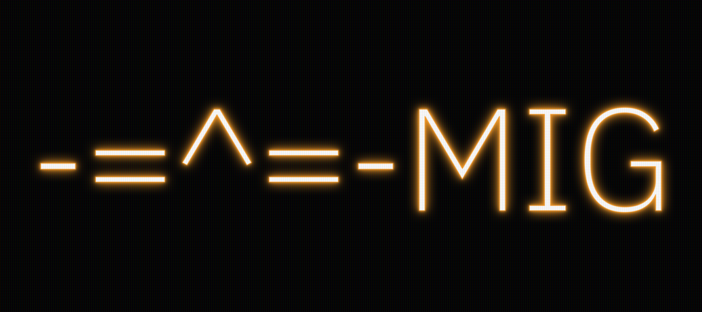

Overview
View Source
MIG
The MIG chat.
Prerequisites
The installation of prerequisites is shown for ArchLinux.
Install the latest version of Erlang/OTP using kerl or asdf
yay -S asdf-vm
asdf plugin add erlang https://github.com/asdf-vm/asdf-erlang.git
asdf install erlang latest
- Rebar3 build tool.
Install the rebar3 package
sudo pacman -S rebar3
Build
- Update the package index
rebar3 update
- Upgrade dependencies
rebar3 upgrade --all
- Compile the needed dependencies and the project’s apps’
.app.srcand.erlfiles
rebar3 compile
- Build release of project
rebar3 release
Usage
- Start the backend
./_build/default/rel/mig/bin/mig foreground
Testing
Run EUnit tests on project apps
rebar3 eunit
License
This project is based on the original work erlang-review (licensed under the Apache License 2.0).
Modifications and additions by Denis Khorkin are licensed under the BSD-3-Clause License.